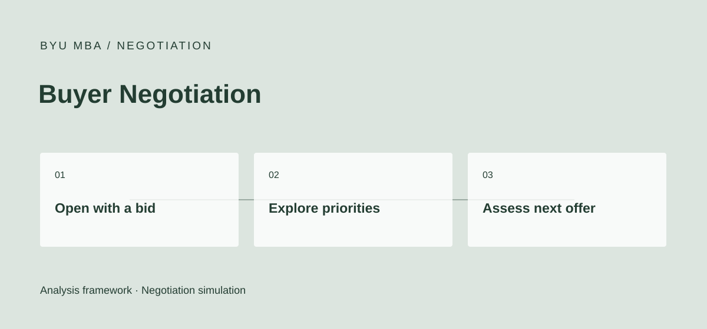

Negotiation simulation · 2026
Buyer Negotiation: Elser
A classroom negotiation in which I represented a buyer and engaged with sellers through a structured bidding process. The exercise combined price discussion with an effort to understand what mattered to the other side.
- My role
- Buyer representative
- Year
- 2026
- Work type
- Negotiation simulation
- Focus
- Anchoring · Interest discovery · Communication

My contribution
I used a lower opening bid and asked questions about the sellers’ interests. I also worked to engage both seller representatives in the conversation rather than directing the exchange to only one person.
Analysis
An opening bid can anchor a discussion, but it does not replace information gathering. Understanding priorities gives the buyer a basis for deciding which terms to adjust and how to explain a revised offer.
Analysis summary
| Element | Action | Purpose |
|---|---|---|
| Opening bid | Establish an initial position | Create a starting point for bargaining |
| Questions | Explore seller priorities | Inform a possible revised offer |
| Engagement | Include both representatives | Support trust and information exchange |
Framework summarized from my preparation, analysis, and reflection.
Outcome and feedback
Peer feedback highlighted listening, balanced engagement, and attention to seller interests. The exercise ended before another bidding round. My reflection focused on the opening approach and the information gathered for a possible revised offer.
What I learned
In a seller-controlled process, preparation includes both the offer and the questions. The information gathered in one round can be as useful as the position established by the bid.